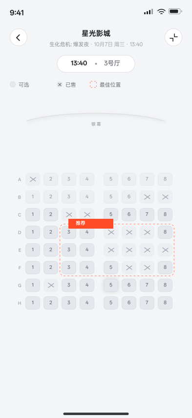
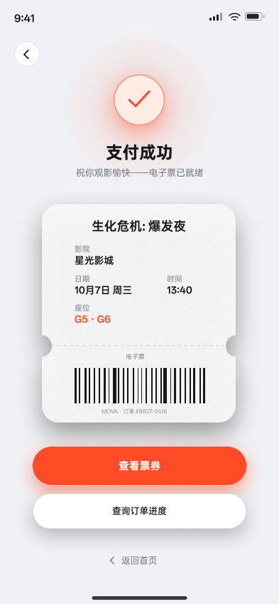
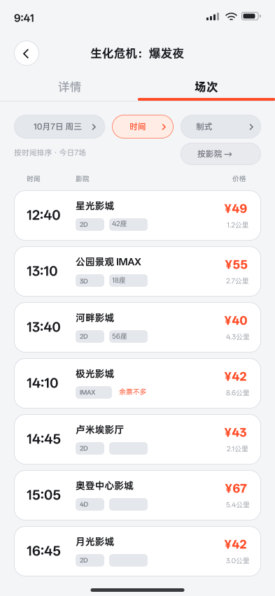
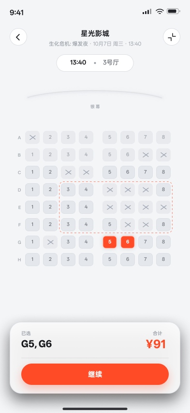
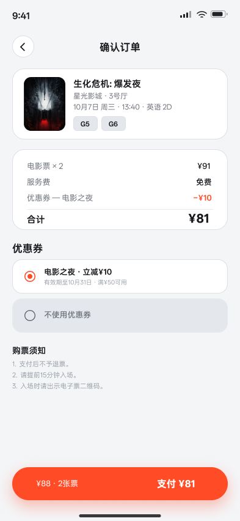
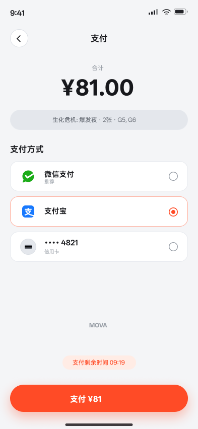

MOVA.
电影购票与观影体验：从查看场次、选定座位，到获取电子票——一条完整的购票体验。


项目概述 Overview
01MOVA 是一款电影发现与购票应用，覆盖观影前的完整决策与交易链路：从选城市、看热映 / 即将上映，到影片详情、选场次、选座、下单支付，最终获得一张可直接入场的电子票。
本页内容依据现有界面与课程研究报告撰写；探索性访谈样本量仅 1，相关结论为初步发现；无法核实的比例、满意度、转化与成效一律不写。
背景与研究 Background & Research
02研究围绕一条真实链路展开：用户如何发现一部电影、如何判断值不值得看与去哪看、以及购票过程中的痛点。目标不是验证统计规律，而是为设计找到可被界面回应的具体问题。
- 发现从哪里得知一部电影（短视频、社交、内容社区等）。
- 判断用什么信息决定「看不看」「去哪家影院、哪个场次」。
- 购票从选场到选座、支付、取票过程中的卡点与不确定。
访谈发现 Interview Findings
03探索性访谈对象为 1 名在校大学生。其发现路径大致为：在抖音、朋友推荐、B 站接触到影片内容后，再到猫眼补充评分、场次与影院等购票所需信息。
- 发现与购票分离内容平台负责「种草」，票务平台负责「补齐信息 + 交易」，用户在两处之间切换。
- 信息补齐进入票务平台后主要补齐评分、场次、影院与座位，判断依据集中在这几项。
- 局限以上仅来自 1 位受访者，属定性初步发现；不代表整体用户，也不提供任何比例或满意度数据。
竞品与设计机会 Competitors & Opportunity
04观察 · 证据来源：课程研究报告
三类产品的侧重分别为：猫眼偏票务效率、淘票票偏票务与权益、豆瓣偏内容与社区。这是对产品定位差异的描述性观察，未做优劣排名。
猫眼
以购票交易为核心，场次、影院、座位链路成熟，强调买到票的效率。
淘票票
在票务之外叠加会员权益与优惠，强化价格与权益吸引力。
豆瓣
以评分、评论与社区讨论见长，擅长「判断值不值得看」，但交易链路并非重心。
把「内容激发的兴趣」与「高效的购票交易」放在同一条路径：用户在浏览影片内容时即可顺势进入场次与选座，并在选择过程中获得确定的座位与费用反馈。
产品定位 Positioning
05据此，MOVA 的产品定位是：面向观影前决策的「内容 + 购票」一体化票务应用——把发现、判断与交易放在同一条路径上。
在现有界面中，这一衔接由「影片详情 → 查找场次 → 场次 → 选座」完成：详情页承接判断，底部「查找场次」进入场次与选座（均可在本页截图中看到）。
信息架构 Information Architecture
06信息架构对应「发现 → 判断 → 购票」三层：发现层承载热映 / 即将上映与城市；判断层是影片详情（评分、简介、演职员）；购票层由场次、选座、支付与票据构成。底部三 Tab：电影 · 影院 · 我的。
电影 Movie
- 城市选择
- 热映 / 即将上映
- 影片详情
- 场次 → 选座 → 支付
影院 Cinema
- 底部导航入口
- （完整列表/详情待补）
我的 Me
- 想看 / 已看
- 我的订单
- 优惠券
辅助 System
- 通知
- 支付方式
- 关于 MOVA
影院 Tab 目前仅有底部导航指示器状态（Figma 画板 1165-3901），尚无完整的影院列表首页与影院详情高保真页面；这部分标为待补，不写成完整的影院浏览体验。
用户流程 User Flow
07用户从电影首页进入影片详情（判断），再进入场次（影院 / 时段筛选）、选座、确认订单、支付，最终到电子票与我的订单。
影片详情 Movie Detail
08影片详情承担「判断」：海报、评分（MOVA 评分 / 观众评分）、简介、演职员与剧照，底部「查找场次」进入购票。为长页面，下方可滚动查看完整长图，或点「查看完整长图」在新窗口打开；移动端同样可上下滚动查看。
筛选场次 Sessions
09场次提供两种视图：按时段（时间优先）与按影院（影院优先）。「按影院」属于场次筛选的一种排序，用于在购票过程中先锁定影院再比较时间；它不等于独立的影院浏览页。行内组合 2D / IMAX / 4D 格式、价格、距离与余票提示。


相关 Figma 画板：「按影院筛选场次」node 1005-16331 ↗（用于说明购票中的影院选择，非影院浏览首页）。
选座交互 Seat Selection
10 · 重点选座是链路的核心决策。界面以银幕弧线建立空间感，用图例区分可选 / 已售 / 最佳位置，并给出「推荐」与已选反馈，让用户在支付前对「坐哪」有把握。


- 可读性颜色 + 图例区分可选 / 已售 / 推荐，减少误选与重复尝试。
- 引导「推荐」把最佳座位前置为默认最优解，降低决策成本。
- 确认感已选状态即时反馈，进入结算前先确认无误。
确认订单 · 支付 · 电子票 Checkout · Payment · E-Ticket
11确认订单把「看什么、哪家、几号厅、几点、哪两个座」一次讲清，并用优惠券直接体现价格变化（合计 ¥91 → 用券后 ¥81）。支付后进入电子票页，含条形码与订单号，票据即可入场。



视觉规范 Visual System
12Figma 中的规范画板（1129-2862）包含一版深色配色探索，属于早期规范探索；而当前已交付的高保真页面主要采用浅色背景 + 橙红操作按钮。两者分开展示，不混为同一版本。
当前高保真 · 浅色界面（据截图可确认）
最终色值 / 字号 / 组件状态：待补（需原始浅色规范或 Figma 变量，不从深色探索稿推断）。
交互原型 Interactive Prototype
13提供 Figma 交互原型与高保真画板入口。以下链接在本环境无 Figma 登录会话，未能验证公开可访问性——如打开需登录或权限不足，请以「原型链接待确认访问权限」视之。
链接的文件 key、节点 ID 与 URL 格式均沿用你提供的原始链接（本环境显示为脱敏形式 BpBSvyIQAZI19mJdWXMvJo，未做替换或编造）。若打开受登录 / 分享权限限制，请视为「访问权限待确认」——本环境无 Figma 登录会话，未能验证公开可访问。
总结 Reflection
14MOVA 呈现了一条完整的购票体验：研究指向「发现与购票分离」，设计机会是把内容激发与高效交易衔接；信息架构以「发现 → 判断 → 购票」回应，界面则在影片详情、场次、选座到电子票的链路中把选择讲清并完成闭环。
把「看什么」到「坐哪、怎么付、怎么入场」讲成一条清晰的路。
成果指标、用户测试与竞品结论：暂无材料，不作结论。研究为课程研究报告中的探索性访谈（样本量 1，初步发现）；完整影院浏览页与最终浅色 Design System 仍待补，不虚构。